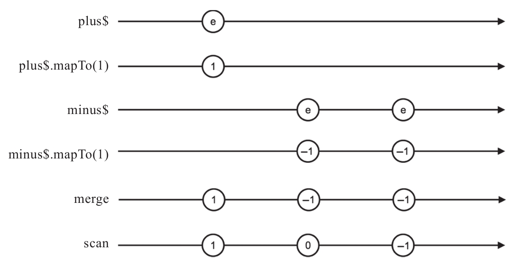

在之前的章节中，我们利用弹珠图来解释操作符的功能。创建类操作符凭空制造出来的数据流当然可以通过一个弹珠序列表示，其他类别的操作符都是根据一个或者多个数据流产生一个新的数据流。
对于多个操作符的组合，对于一个特定的数据序列，同样也可以通过弹珠图来展示过程。
上面的Counter程序的弹珠图如图12-3展示。

图12-3 Counter的弹珠图
上面的弹珠图模拟了点击一次“+”按钮，然后再点击两次“-”按钮的情景，最后得到的Counter计数值为-1。
和数据流依赖图一样，在调试过程中，完全可以用纸和笔来画弹珠图，作用是帮助我们理清楚数据转化的过程。